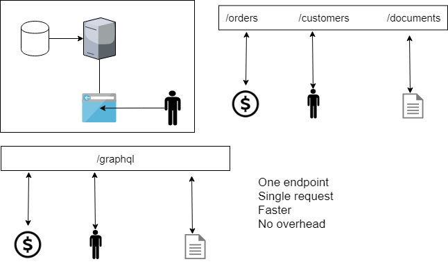

/apples and modify using verbs like GET, PUT and POST. But everytime, while working on client we have to call or modify backend so causes delays and overheads and is no ideal for testing.Graphql can be used with a HTTP Client like fetch, axios or superagent request and it just needs payload, url and post method. Apollo is simply an graphql client which has cacheing, formatting the query and http client build in. In other hand, relay-modern has preprocessing (process query ahead of time, so extra build time). It gives better optimization. Whereas in Apollo, we have our React Component and graphql query at the buttom and we can bind those two and create a new component. And we can use that component anywhere and data will be fetched automatically with cacheing and auto UI update.
It is an SaaS (BaaS to be precise) that allow us to connect to backend without our own server.

```graphql type Product @model{ id: ID! @isUnique inStoreCount: Int name: String! @defaultValue(value: "Default Name") description: String additionalDescription: Json createdAt: DateTime! release: DateTime } query { allProducts { additionalDescription createdAt description inStoreCount } } { "data": { "allProducts": [ { "additionalDescription": { "imageUrl": "https://images.unsplash.com/photo-152.png" }, "createdAt": "2019-01-27T06:19:42.000Z", "description": "Tero Bau version 2", "inStoreCount": 11 }, { "additionalDescription": { "imageUrl": "https://i.pinimg.com/originals/c6/a2/89.jpg" }, "createdAt": "2019-01-27T06:19:50.000Z", "description": "Tero Bau", "inStoreCount": 22 } ] }
```
bash
curl 'https://api.graph.cool/simple/v1/cjreif5524tfb0194zw60vjbu'
-H 'Authorization: Bearer YOUR_AUTH_TOKEN'
-d '{"query":""{allProducts{additionalDescriptioncreatedAtdescriptioninStoreCount}}""}'
$ npm install graphql-request
```javascript const GraphQLClient = require("graphql-request").GraphQLClient;
const client = new GraphQLClient( "https://api.graph.cool/simple/v1/cjreif5524tfb0194zw60vjbu", { headers: { Authorization: "Bearer YOUR_AUTH_TOKEN" } } );
function getItem() { return client.request(` { allProducts { additionalDescription createdAt description inStoreCount } }
`); } ```
$ npm install isomorphic-fetch es6-promise
```javascript require("es6-promise").polyfill(); require("isomorphic-fetch");
function getItems() { return fetch("https://api.graph.cool/simple/v1/cjreif5524tfb0194zw60vjbu", { method: "post", headers: { "Content-Type": "application/json" //'Authorization': 'Bearer YOUR_AUTH_TOKEN' }, body: '{"query":"{allProducts{additionalDescriptioncreatedAtdescriptioninStoreCount}}"}' }); } ```
```javascript import { GraphQLClient } from "graphql-request";
const client = new GraphQLClient( "https://api.graph.cool/simple/v1/cjreif5524tfb0194zw60vjbu", { headers: { Authorization: "Bearer YOUR_AUTH_TOKEN" } } );
function getItem() { return client.request(` { allProducts { additionalDescription createdAt description inStoreCount } }
`); } ```
For Accessing Token, go to setting and then authentication and create auth there.
```graphql type Product @model { ... orders: [Order!]! @relation(name: "OrderOnProduct") ... }
type Order @model { customerEmail: String! id: ID! @isUnique products: [Product!]! @relation(name: "OrderOnProduct") } ```